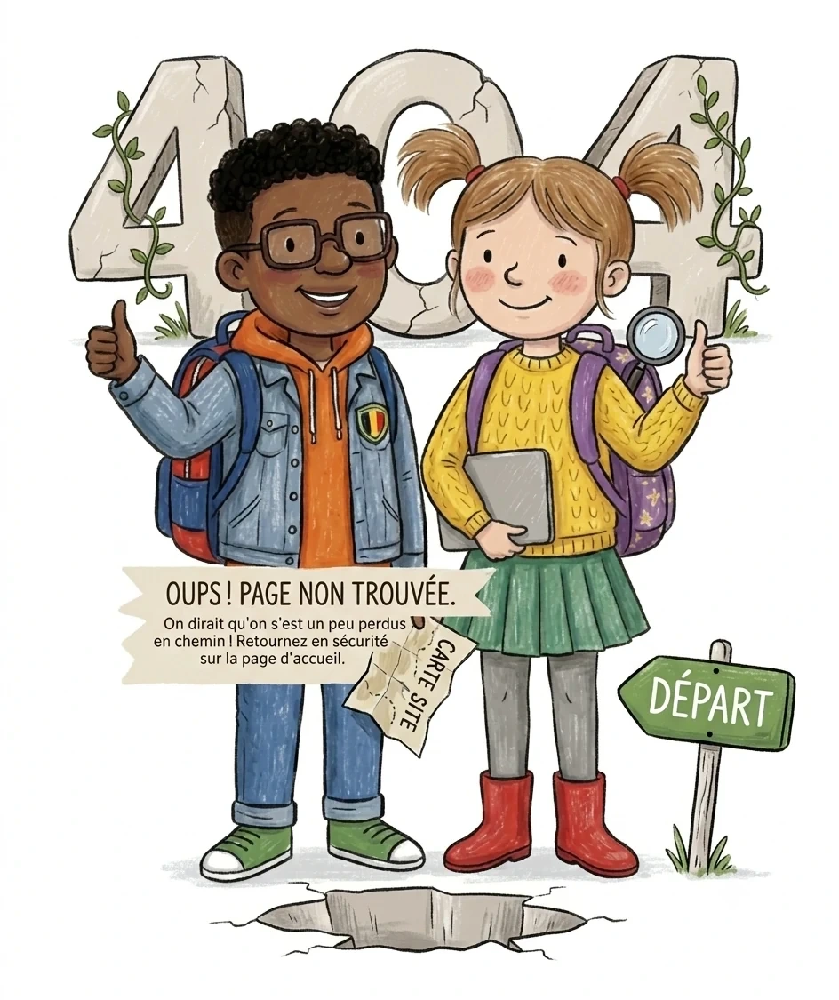

Page non trouvée
Cette adresse ne mène nulle part : le lien est peut-être incomplet ou mal recopié. Retourne à l'accueil pour retrouver ton chapitre.
Retour à l'accueil
Cette adresse ne mène nulle part : le lien est peut-être incomplet ou mal recopié. Retourne à l'accueil pour retrouver ton chapitre.
Retour à l'accueil